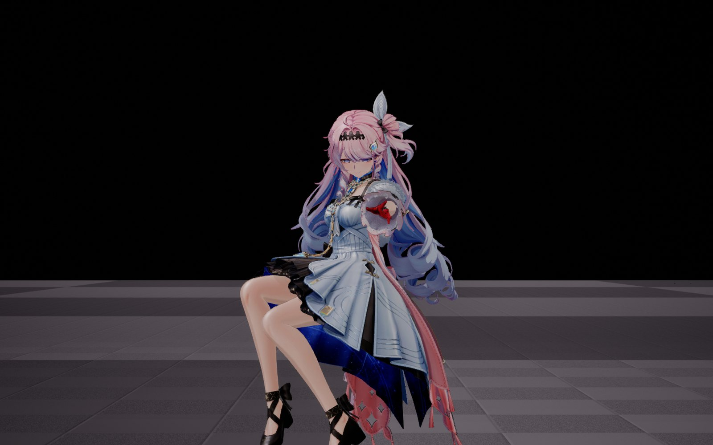
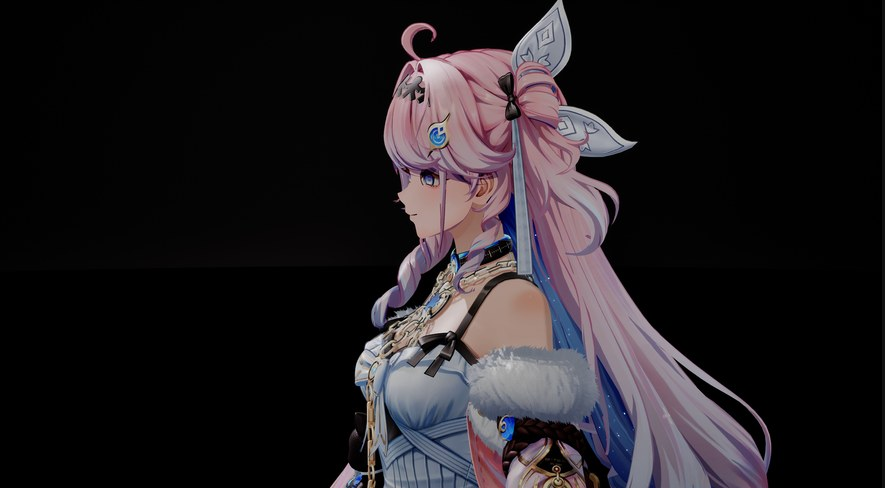

UE5 PBR × NPR 角色渲染系统 CEL-SHADED CHARACTER RENDERING SYSTEM
角色独立 Technical Artist · Rendering / Runtime / Tools
引擎Unreal Engine 5.7 → 5.8 · 无引擎源码改动
技术栈Material · HLSL / USH · C++ · Blueprint · EUW · FSceneViewExtension + RDG
FACE SDF
WARP SSS
HAIR ANISO
FUR POM
SHELL OUTLINE
PER-OBJECT SHADOW
SVE + RDG PASS
角色渲染
31 个可复用材质函数
阅读完整案例 →
IN-PAGE EVIDENCE4 / 10 STUDIES
二次元渲染最难的不是「像」，而是「稳」：转头时脸部阴影不能跳变，主光、局部光、环境光同时存在时画面不能打架。这套系统用 31 个材质函数组成复用库，配一层 C++ 数据驱动运行时做逐帧光照仲裁和两套自阴影通路，再加引擎层 RDG 自定义 Pass 和一套调试视图——目标只有一个：效果可解释，问题可归因。

MATERIAL REUSE双形态：一次针对材质库的复用验证。两套形态外观差别很大，底下却是同一批 master 材质，区别只在材质实例的参数与 Static Switch——master 一开始就按功能切模块（SDF 阴影、各向异性高光、POM 视差、Matcap、描边），而不是塞进一张巨图。所以新增一个形态的成本是「建实例、调参数」，不是「再写一套材质」；改 master 里的某个模块，所有形态、所有分档同步生效，不会出现两套材质各自漂移。



